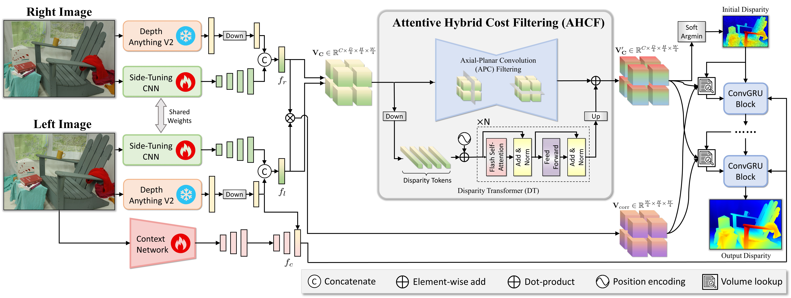
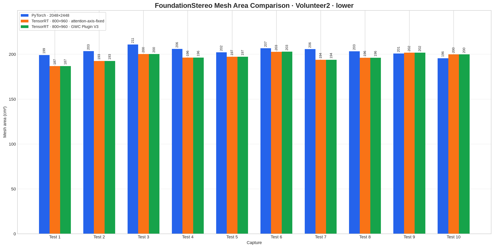
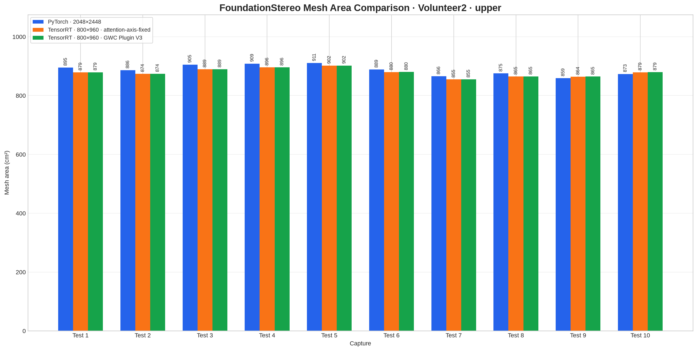
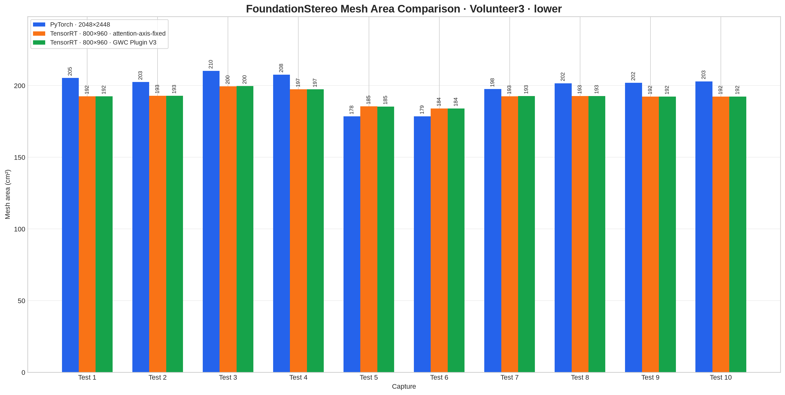
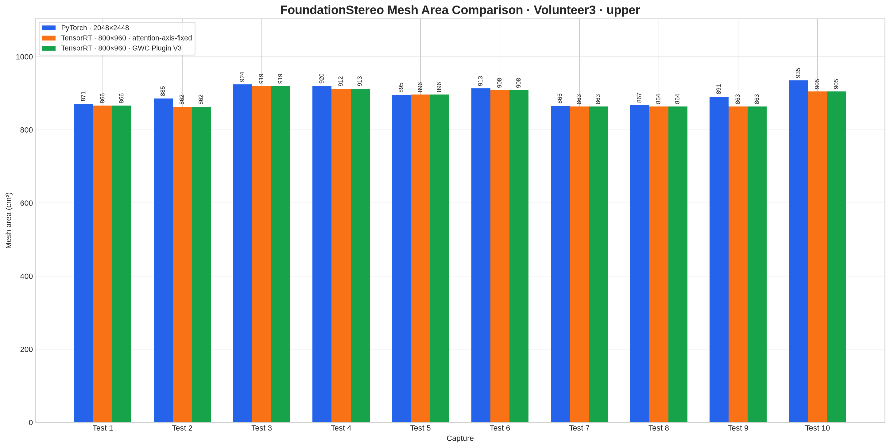

CMake
Initial C++ project build setup is in place.
Development Notes
A lightweight record of inference benchmarks, optimization decisions, and experiment outcomes.
Reduce the latency and peak GPU memory use of Python/PyTorch hierarchical FoundationStereo inference while preserving the quality and correctness of the resulting disparity maps.
| Hiera stage | Configuration | Measured time |
|---|---|---|
| Half-resolution model forward | 32 iterations | 1.754 s |
| Full-resolution model forward | 32 iterations | 6.543 s |
| Model forward subtotal | 8.297 s | |
Times are measured around the two synchronized model.forward calls in Hiera mode.
The end-to-end inference time can also include tensor preparation, interpolation, and padding.
| Metric | Before timed inference | After timed inference |
|---|---|---|
| Allocated memory | 1,463.9 MiB | 1,485.2 MiB |
| Reserved memory | 15,786.0 MiB | 15,786.0 MiB |
| Peak allocated memory | 1,463.9 MiB | 12,258.6 MiB |
| Peak reserved memory | 15,786.0 MiB | 15,786.0 MiB |
The primary memory-reduction target is peak allocated memory during Hiera inference.
Input stereo images: 2048 × 2448.
2048 × 2448 → 2048 × 2464
OpenCV replicate padding replaces Python F.pad(x, self._pad, mode='replicate').
cv::copyMakeBorder(image, padded, top, bottom, left, right, cv::BORDER_REPLICATE) · 8 px on each horizontal edge
2048 × 24482048 × 2464
Convert the outer-padded images to float32, then scale 2048 × 2464 → 1024 × 1232 with bilinear interpolation.
Each dimension is scaled by 0.5.
Replicate-pad the small float32 images to a 32-pixel boundary: 1024 × 1232 → 1024 × 1248.
Matches Python small_padder = InputPadder(..., divis_by=32, force_square=False).
cv::copyMakeBorder(..., cv::BORDER_REPLICATE) · 8 px on each horizontal edge
1024 × 12321024 × 1248
Allocate the GPU runtime memory required for the prepared stereo inputs and subsequent inference.
Run conda run -n fs python python/make_coarse_onnx.py to generate onnx/coarse_engine_1024x1248_iters32.onnx.
Input: left, right · RGB float32[1, 3, 1024, 1248] · range 0–255
Output: disp · float32[1, 1, 1024, 1248]
Build a static TensorRT engine without the aggressive --fp16 tactic flag.
Build: trtexec --onnx=onnx/coarse_engine_1024x1248_iters32.onnx --saveEngine=onnx/coarse_engine_1024x1248_autocast_l3.engine --builderOptimizationLevel=3 --profilingVerbosity=detailed --skipInference
Precision: retain only the FP16 casts already present from PyTorch autocast; do not add TensorRT --fp16 tactics.
make_onnx_liu.py builds successfully. At the target 1024 × 1248 resolution, both exporters reproduce a Myelin failure: No valid tactics to print (all tactics failed), followed by MyelinCheckException: Must have costs and Could not find any implementation for ForeignNode[ONNXTRT_ShapeShuffle ... /Unsqueeze_724]. TensorRT creates only a 0 MiB empty engine. TensorRT chooses tactics for the fixed tensor shapes at build time: increasing resolution changes intermediate tensor sizes, memory demand, and fusion choices, so a tactic valid at 512 × 608 may be unavailable at 1024 × 1248.
FoundationStereo/core/foundation_stereo.py; the model instead returns the interpolated initial disparity, so it is not a full FoundationStereo result.
TODO: restore the GRU iterations after replacing or restructuring the TensorRT-incompatible path and validating that the full disparity-refinement output builds correctly.
PyTorch+xFormers executes memory-efficient MHA; the exported TensorRT engine retains the separate attention primitive operations.
DINOv2 ViT-L has 24 sequential Transformer blocks. Each block contains multi-head self-attention; “24 blocks” is the Transformer depth, not the number of attention heads.
QKT MatMul → scale → Softmax → AV MatMul, with reshape, transpose, and output-projection operations around them.
Observed in TensorRT 10.16: both the 512 × 512 and 1024 × 1248 engines retain separate /feature/dino/blocks.N/attn/MatMul, MatMul_1, and projection layers for all 24 blocks; no MHA / FlashAttention layer is emitted.
Implication: decreasing resolution reduces the token count and latency, but does not change this graph-level fusion result. Recovering xFormers-like execution requires constructing attention with TensorRT native IAttention or supplying a FlashAttention TensorRT plugin.
TODO: compile FoundationStereo with the TensorRT container workflow provided by the original repository, then inspect that engine to determine whether its DINOv2 attention is likewise left as separate QKT, Softmax, and AV operations.
The original ONNX/TensorRT container workflow cannot be validated on the current Blackwell workstation.
Observed: the workstation GPU is NVIDIA RTX PRO 4000 Blackwell (sm_120). The container's PyTorch 2.4.1+cu124 reports support only through sm_90 and fails before ONNX export with CUDA error: no kernel image is available for execution on the device.
Impact: this is a PyTorch CUDA-architecture compatibility failure, not a FoundationStereo, GRU, ONNX, or TensorRT graph result. A valid ONNX model and TensorRT engine cannot be generated or benchmarked with this dependency combination on this GPU.
Decision: abandon validation of the original torch 2.4 + CUDA 12.4 container workflow on the current Blackwell host. Do not use this blocked run to judge its latency, memory use, or attention fusion behavior.

1 2 3 4Use NVIDIA's deployable FoundationStereo model as the alternative validation path instead of exporting ONNX with the unsupported legacy PyTorch container.
Download: ngc registry model download-version nvidia/tao/foundationstereo:deployable_v2.0 --dest onnx
Build fixed-shape engine: trtexec --onnx=onnx/deployable_foundationstereo_small_576x960_v2.0.onnx --saveEngine=onnx/foundationstereo_576x960.engine
Four profiling stages are mapped to the paper architecture. Hover or focus a colored block to reveal its stage name.
def forward(self, image1, image2, iters=12, flow_init=None, test_mode=False, low_memory=False, init_disp=None):
B = len(image1)
low_memory = low_memory or self.args.get("low_memory", False)
image1 = normalize_image(image1)
image2 = normalize_image(image2)
↑ Figure with torch.amp.autocast("cuda", enabled=self.args.mixed_precision):
out, vit_feat = self.feature(torch.cat([image1, image2], dim=0))
vit_feat = vit_feat[:B]
features_left = [o[:B] for o in out]
features_right = [o[B:] for o in out]
stem_2x = self.stem_2(image1)
↑ Figure gwc_volume = build_gwc_volume(features_left[0], features_right[0], self.args.max_disp//4, self.cv_group)
left_tmp = self.proj_cmb(features_left[0])
right_tmp = self.proj_cmb(features_right[0])
concat_volume = build_concat_volume(left_tmp, right_tmp, maxdisp=self.args.max_disp//4)
del left_tmp, right_tmp
comb_volume = torch.cat([gwc_volume, concat_volume], dim=1)
comb_volume = self.corr_stem(comb_volume)
comb_volume = self.corr_feature_att(comb_volume, features_left[0])
comb_volume = self.cost_agg(comb_volume, features_left)
prob = F.softmax(self.classifier(comb_volume).squeeze(1), dim=1)
if init_disp is None:
init_disp = disparity_regression(prob, self.args.max_disp//4)
↑ Figure cnet_list = list(
self.cnet(
image1,
vit_feat=vit_feat,
num_layers=self.args.n_gru_layers,
)
)
net_list = [torch.tanh(x[0]) for x in cnet_list]
inp_list = [torch.relu(x[1]) for x in cnet_list]
inp_list = [self.cam(x) * x for x in inp_list]
att = [self.sam(x) for x in inp_list]
geo_fn = Combined_Geo_Encoding_Volume(
features_left[0].float(),
features_right[0].float(),
comb_volume.float(),
num_levels=self.args.corr_levels,
dx=self.dx,
)
b, c, h, w = features_left[0].shape
coords = torch.arange(
w, dtype=torch.float, device=init_disp.device
).reshape(
1, 1, w, 1
).repeat(b, h, 1, 1)
disp = init_disp.float()
disp_preds = []
for itr in range(iters):
disp = disp.detach()
geo_feat = geo_fn(disp, coords, low_memory=low_memory)
with torch.amp.autocast("cuda", enabled=self.args.mixed_precision):
net_list, mask_feat_4, delta_disp = self.update_block(
net_list, inp_list, geo_feat, disp, att
)
disp = disp + delta_disp.float()
↑ Figure if test_mode and itr < iters - 1:
continue
disp_up = self.upsample_disp(disp.float(), mask_feat_4.float(), stem_2x.float())
disp_preds.append(disp_up)
if test_mode:
return disp_up
return init_disp, disp_predsBenchmark conditions: tested with NGC.ipynb; direct PyTorch inference, vitl, fixed 576 × 960 input, xFormers (potential), and no Hiera path.
Mean complete forward latency: 697.35 ms
↳ Feature/DINO within full forward: 150.41 ms
↳ Cost volume / 3D aggregation within full forward: 100.55 ms
↳ Context + iterative GRU within full forward: 444.39 ms
↳ Disparity upsample within full forward: 1.16 ms
Peak allocated CUDA memory: 3,162.54 MiB
⚠ ONNX GPU OOM: deployable model fails at 576 × 960 on a 24 GB GPU.
Environment: Driver 610.43.02 + CUDA 13.3
TensorRT 11.2.1
trtexec \
--onnx=onnx/deployable_foundationstereo_small_576x960_v2.0.onnx \
--saveEngine=onnx/fs_576x960_l3_detailed.engine \
--builderOptimizationLevel=3 \
--profilingVerbosity=detailed \
--exportLayerInfo=onnx/fs_576x960_l3_layers.json \
--skipInferencetrtexec \
--loadEngine=onnx/fs_576x960_l3_detailed.engine \
--profilingVerbosity=none \
--warmUp=1000 \
--duration=60 \
--iterations=1Total GPU memory required: 15,024 MiB
Mean inference latency: 1,020.61 ms
Fixed-resolution TensorRT analysis builds for the ViT-L, 32-iteration FoundationStereo ONNX exports.
trtexec \
--onnx=onnx/deployable_foundationstereo_small_576x960_v2.0.onnx \
--saveEngine=onnx/deployable_foundationstereo_small_576x960_v2.0_analysis.engine \
--builderOptimizationLevel=3 \
--profilingVerbosity=detailed \
--exportLayerInfo=onnx/deployable_foundationstereo_small_576x960_v2.0_analysis_layers.json \
--verbose \
--skipInference \
2>&1 | tee onnx/deployable_foundationstereo_small_576x960_v2.0_build_verbose.logtrtexec \
--loadEngine=onnx/deployable_foundationstereo_small_576x960_v2.0_analysis.engine \
--profilingVerbosity=detailed \
--dumpProfile \
--warmUp=1000 \
--duration=10trtexec \
--loadEngine=onnx/deployable_foundationstereo_small_576x960_v2.0_analysis.engine \
--profilingVerbosity=detailed \
--dumpProfile \
--exportProfile=onnx/deployable_foundationstereo_small_576x960_v2.0_analysis_profile.json \
--warmUp=1000 \
--duration=60 \
--iterations=1trtexec \
--onnx=onnx/foundationstereo_800x960.onnx \
--saveEngine=onnx/foundationstereo_800x960_analysis.engine \
--builderOptimizationLevel=3 \
--profilingVerbosity=detailed \
--exportLayerInfo=onnx/foundationstereo_800x960_analysis_layers.json \
--verbose \
--skipInference \
2>&1 | tee onnx/foundationstereo_800x960_build_verbose.logtrtexec \
--loadEngine=onnx/foundationstereo_800x960_analysis.engine \
--profilingVerbosity=detailed \
--dumpProfile \
--warmUp=1000 \
--duration=10trtexec \
--loadEngine=onnx/foundationstereo_800x960_analysis.engine \
--profilingVerbosity=detailed \
--dumpProfile \
--exportProfile=onnx/foundationstereo_800x960_analysis_profile.json \
--warmUp=1000 \
--duration=60 \
--iterations=1Profile finding
This is a model-graph and precision effect, not an inverse resolution-scaling effect. ViT-S does reduce feature-encoder time, but the deployable v2.0 AHCF path dominates the end-to-end result.
| Profile stage / runtime metric | 576 × 960 · deployable ViT-S | 800 × 960 · local ViT-L | Comparison |
|---|---|---|---|
| 1. Feature / DINO | 85.5 ms | 174.2 ms | Normal, large ViT requires more time |
| 2. AHCF / cost volume | 530.7 ms | 39.8 ms | 576 is 491 ms slower |
| 3. Context + GRU | 382.8 ms | 343.7 ms | 576 is 39 ms slower |
| 4. Upsampling | 1.62 ms | 0.82 ms | Minimal impact |
| Profile layer total | 1,033.2 ms | 588.3 ms | Consistent with 1,020.61 / 578 ms end-to-end inference |
| Total GPU memory required | 15,024 MiB | 4,374 MiB | 576 requires 10,650 MiB more |
Memory result: total GPU memory required is 15,024 MiB at 576 × 960 versus 4,374 MiB at 800 × 960; TensorRT activation / max scratch is 14,293.65 MiB versus 3,110.77 MiB.
Four suspects
Feature encode, AHCF, GRU iterations, or disparity upsampling?
STA / DINO encoder
02Cost volume + aggregation · confirmed bottleneck
03Context + disparity refinement
04Learned disparity output
5.57 GiB FP32 attention matrix. This explicitly materialized score dominates activation memory and confirms AHCF as the bottleneck.
corr volume: [1, 28, 104, 144, 240] FP32
attention score: [34,560, 4, 104, 104] FP3234,560 = 144 × 240. One attention score occupies 144 × 240 × 4 heads × 104 × 104 × 4 bytes ≈ 5.57 GiB.
There are four sequential attention blocks. TensorRT reuses part of the buffer, but the activation requirement remains substantially higher.
The 576 cost-volume disparity dimension is D = 104; under FoundationStereo's max_disp / 4 construction, this implies approximately:
max_disp = 104 × 4 = 416
800 local model: max_disp = 192
D = 192 / 4 = 48See the max_disp / 4 cost-volume construction.
576 cost-volume elements / 800 cost-volume elements
= 104 × 144 × 240 / (48 × 200 × 240)
= 1.56After FP32 for 576 versus FP16 for 800, the byte-volume ratio is 1.56 × 2 = 3.12×. Fewer image pixels cannot offset the larger disparity range.
The NGC 576 graph computes an attention score over the full cost-volume disparity axis:
[H/4 × W/4, heads, D, D]
= [34,560, 4, 104, 104] FP32The cost_vol_disp attention alone consumes about 257.9 ms.
corr_stem: 160.2 msclassifier: 53.7 msThe local FoundationStereo implementation applies conv_patch(kernel=4, stride=4) before attention. The corresponding 800 attention input is only [3,000, 12, 28] FP16, and its full pyramid-attention path uses about 1.04 ms.
BUG FOUND
The local FlashMultiheadAttention reshapes Q/K/V as [B, L, heads, head_dim] and passes them directly to PyTorch scaled_dot_product_attention (SDPA). However, SDPA expects the head dimension before the sequence dimension: [B, heads, L, head_dim].
As documented in FoundationStereo Issue #239, this likely originated when the implementation changed from flash_attn_func to PyTorch SDPA without changing tensor layout. Under the current layout, SDPA interprets heads = 4 as the sequence length, computing 4 × 4 cross-head attention rather than the intended disparity-axis attention.
current: [B, D, heads, head_dim] → score [B, D, 4, 4]
intended: [B, heads, D, head_dim] → score [B, heads, D, D]The required correction is to transpose Q/K/V with .transpose(1, 2) before SDPA and transpose the output back afterwards. The dimension convention is specified in the PyTorch SDPA documentation.
Section 3.2 calls this module the Disparity Transformer (DT), which performs full self-attention over the disparity dimension
. The paper first applies Conv 4×4×4 to the cost volume, then reshapes it into token sequences whose length is disparity, followed by four Transformer encoder blocks with FlashAttention. See the FoundationStereo CVPR 2025 paper.
DT token layout in the paper: [(H / 16) × (W / 16), C, D / 16]
max_disp = 192 → disparity-token length = 192 / 16 = 12max_disp = 192 px192 / 4 = 48 bins4×4×4stride = 448 / 4 = 12 tokens[3000, 4, 12, 12]Therefore, the fixed 800 engine score [3000, 4, 12, 12] has the intended head/sequence ordering. Its D = 12 is the paper's downsampled disparity-token length, not a 12-pixel maximum disparity.
BUG FIXED
core/submodule.pyAll four corrections below are now present in the local source and are included when exporting the new attention-axis-fixed ONNX and TensorRT engine.
Before
Q = Q.view(Q.size(0), Q.size(1), self.num_heads, self.head_dim)
K = K.view(K.size(0), K.size(1), self.num_heads, self.head_dim)
V = V.view(V.size(0), V.size(1), self.num_heads, self.head_dim)
attn_output = F.scaled_dot_product_attention(Q, K, V)
attn_output = attn_output.reshape(B, L, -1)After
Q = Q.view(B, L, self.num_heads, self.head_dim).transpose(1, 2)
K = K.view(B, L, self.num_heads, self.head_dim).transpose(1, 2)
V = V.view(B, L, self.num_heads, self.head_dim).transpose(1, 2)
attn_output = F.scaled_dot_product_attention(Q, K, V, attn_mask=attn_mask)
attn_output = attn_output.transpose(1, 2).reshape(B, L, -1)ratio parameter was ignoredBefore
self.fc = nn.Sequential(nn.Conv2d(in_planes, in_planes // 16, 1, bias=False),
nn.ReLU(),
nn.Conv2d(in_planes // 16, in_planes, 1, bias=False))After
self.fc = nn.Sequential(nn.Conv2d(in_planes, in_planes // ratio, 1, bias=False),
nn.ReLU(),
nn.Conv2d(in_planes // ratio, in_planes, 1, bias=False))Before
self.conv1 = nn.Conv2d(inplanes, planes, kernel_size=kernel_size, stride=stride, bias=bias, padding=padding)
if self.norm_layer is not None:
self.bn1 = norm_layer(planes)
self.relu = nn.ReLU(inplace=True)
self.conv2 = nn.Conv2d(planes, planes, kernel_size=kernel_size, stride=stride, bias=bias, padding=padding)After
self.conv1 = nn.Conv2d(inplanes, planes, kernel_size=kernel_size, stride=stride, bias=bias, padding=padding)
if self.norm_layer is not None:
self.bn1 = norm_layer(planes)
self.relu = nn.ReLU(inplace=True)
self.conv2 = nn.Conv2d(planes, planes, kernel_size=kernel_size, stride=1, bias=bias, padding=padding)Before
self.conv1 = nn.Conv3d(inplanes, planes, kernel_size=kernel_size, stride=stride, bias=bias, padding=padding)
if self.norm_layer is not None:
self.bn1 = norm_layer(planes)
self.relu = nn.ReLU(inplace=True)
self.conv2 = nn.Conv3d(planes, planes, kernel_size=kernel_size, stride=stride, bias=bias, padding=padding)After
self.conv1 = nn.Conv3d(inplanes, planes, kernel_size=kernel_size, stride=stride, bias=bias, padding=padding)
if self.norm_layer is not None:
self.bn1 = norm_layer(planes)
self.relu = nn.ReLU(inplace=True)
self.conv2 = nn.Conv3d(planes, planes, kernel_size=kernel_size, stride=1, bias=bias, padding=padding)COMPLETED · GWC PLUGIN SINGLE ENGINE
The Python build_gwc_volume(...) call has been replaced with a dedicated TensorRT plugin. The projected concatenation volume and final channel concatenation remain native TensorRT operations.
View the earlier AHCF / cost-volume step
gwc_volume = build_gwc_volume(
features_left[0],
features_right[0],
self.args.max_disp // 4,
self.cv_group,
)
def build_gwc_volume(refimg_fea, targetimg_fea, maxdisp, num_groups, stride=1):
"""
@refimg_fea: left image feature
@targetimg_fea: right image feature
"""
B, C, H, W = refimg_fea.shape
volume = refimg_fea.new_zeros([B, num_groups, maxdisp, H, W])
for i in range(maxdisp):
if i > 0:
volume[:, :, i, :, i:] = groupwise_correlation(refimg_fea[:, :, :, i:], targetimg_fea[:, :, :, :-i], num_groups)
else:
volume[:, :, i, :, :] = groupwise_correlation(refimg_fea, targetimg_fea, num_groups)
volume = volume.contiguous()
return volume
def groupwise_correlation(fea1, fea2, num_groups):
B, C, H, W = fea1.shape
assert C % num_groups == 0, f"C:{C}, num_groups:{num_groups}"
channels_per_group = C // num_groups
fea1 = fea1.reshape(B, num_groups, channels_per_group, H, W)
fea2 = fea2.reshape(B, num_groups, channels_per_group, H, W)
with torch.cuda.amp.autocast(enabled=False):
cost = (F.normalize(fea1.float(), dim=2) * F.normalize(fea2.float(), dim=2)).sum(dim=2) # Divide first for numerical stability
assert cost.shape == (B, num_groups, H, W)
return costself.feature(torch.cat([image1, image2], dim=0)) returns ([x4, x8, x16, x32], vit_feat).
Split its batch into features_left[0] and features_right[0]. With B = 1 and an 800 × 960 input, features_left[0] has shape [1, 224, 200, 240]. The GWC calculation uses max_disp = 192 // 4 = 48 disparity bins and cv_group = 8, and produces gwc_volume.
B, C, H, W = refimg_fea.shape
volume = refimg_fea.new_zeros([B, num_groups, maxdisp, H, W])Here B, C, H, W = 1, 224, 200, 240. This creates the zero-filled output tensor volume: [1, 8, 48, 200, 240]; later disparity steps fill in its correlation values.
for i in range(maxdisp):Because maxdisp = 48, this loop runs 48 iterations: i = 0 through 47. Each iteration fills volume[:, :, i, :, i:]. As i increases, the written spatial columns move right: iteration i fills columns i:W, while columns 0:i remain zero.
groupwise_correlation(refimg_fea[:, :, :, i:],
targetimg_fea[:, :, :, :-i], num_groups)For iteration i > 0, both inputs have shape [1, 224, 200, 240-i]. Split 224 channels into cv_group = 8 groups of 28 channels. For each group, normalize the left and right vectors, multiply them, and sum their 28 channels. At i = 0, each input normalizes 1 × 8 × 200 × 240 = 384,000 28-dimensional vectors, or 10,752,000 elements; both inputs normalize 21,504,000 elements. The result has shape [1, 8, 200, 240-i] and is written into the current volume[:, :, i, :, i:] slice.
Create these four files first. They separate the TensorRT Plugin V3 interface from the CUDA implementation.
cpp/include/fs/inference/plugins/GWCVolumePlugin.hpp
cpp/include/fs/inference/plugins/GWCVolumeKernel.hpp
cpp/src/inference/plugins/GWCVolumePlugin.cpp
cpp/src/inference/plugins/GWCVolumeKernel.cu
GWCVolumeKernel.cu
└── CUDA correlation computation
GWCVolumeKernel.hpp
└── CUDA kernel launcher declaration
GWCVolumePlugin.cpp
├── IPluginV3
├── IPluginV3OneCore
├── IPluginV3OneBuild
├── IPluginV3OneRuntime
└── IPluginCreatorV3One
GWCVolumePlugin.hpp
└── Plugin name, version, and registration entry pointW × H × (groups × maxDisparity) = 240 × 200 × 384.Note: Dynamic shared memory is disabled during kernel execution: 0 bytes per block. Each thread independently reads its feature vectors and accumulates one correlation value, so this first kernel has no cross-thread data to reuse; shared-memory staging and synchronization would add overhead.
max_disp = 192 limits this model’s disparity search range. In the current camera setup, objects closer than 20 cm cannot be reconstructed reliably. Increasing the range requires changing max_disp before Python model construction, then re-exporting ONNX and rebuilding both the plugin engine and TensorRT engine.
The refactored fused GWCVolumeKernel was tested against the original TensorRT cost-volume construction and a brute-force reference.
Original TensorRT cost-volume build: 24.7 ms per cost volume
Fused GWCVolumeKernel: 3.338 ms per cost volume
Speedup: 24.7 / 3.33 = 7.42×
Maximum absolute error vs. brute-force reference: 2.98023e-08
The plugin keeps the GWC volume inside TensorRT-managed GPU memory; it does not copy the result back to the CPU.
TensorRT engine
left [1,224,200,240] FP32 ─┐
├─ GWCVolumePlugin::enqueue()
right [1,224,200,240] FP32 ─┘ │
└─ launchGwcVolumeKernel(...)
│
└─ CUDA kernel
volume [1,8,48,200,240] FP32TensorRT provides all three GPU pointers. The kernel writes directly into the TensorRT-managed volume buffer, which subsequent layers consume without a copy.
A minimal plugin-only TensorRT engine validated the complete integration path:
register plugin → create left/right inputs → add GWCVolume layer
→ build engine → deserialize engine → enqueueV3 → validate volumeResult: PASS — TensorRT built and deserialized the engine, then executed the Plugin V3 layer.
Output: volume [1, 8, 48, 200, 240]
Mean enqueueV3 latency: 3.1952 ms (20 warm-up iterations, then 100 timed iterations)
All-one input validation: valid correlation (d=0, w=0) = 1; invalid shifted position (d=1, w=0) = 0.
Ran python/make_onnx_liu_gwc_plugin.py in the fs Conda environment to export the fixed 800 × 960, 32-iteration FoundationStereo model.
The next graph transformation replaces the complete FoundationStereo GWC cost-volume subgraph with the custom plugin node:
x4 left feature ─┐
├─ GWCVolume (domain/namespace: foundation_stereo)
x4 right feature ─┘
↓
volume [1,8,48,200,240]
↓
original downstream TensorRT layers that consume volumeThe plugin-ready ONNX does not contain the GWC CUDA implementation. It only declares the foundation_stereo::GWCVolume operation. The compiled libGWCVolumePlugin.so supplies the Plugin V3 creator, output-shape/type rules, and CUDA kernel that TensorRT uses for this node.
plugin-ready ONNX
standard ONNX layers + foundation_stereo::GWCVolume
↓
fs_build_single_engine
register GWCVolume Plugin V3 creator
↓
TensorRT ONNX Parser
standard nodes → native TensorRT layers
GWCVolume node → custom Plugin V3 layer
↓
TensorRT builder chooses GPU tactics and serializes one .engineThe builder registers the plugin before parsing ONNX. Without that registration, the parser has no implementation for the custom GWC node and engine construction fails.
Build on this CUDA 13.3 / TensorRT 11.2 system:
In VS Code, run the default Build TSFS task with Ctrl+Shift+B. It configures the Release build and builds all CMake targets, including fs_build_single_engine and libGWCVolumePlugin.so.
Then open Run and Debug, select Build FoundationStereo Single Engine (800x960), and press Ctrl+F5. The launch configuration runs fs_build_single_engine with the plugin ONNX and writes onnx/foundationstereo_800x960_gwc_plugin.engine.
TensorRT 11 precision: networks are explicit-batch and strongly typed by default. The exported ONNX tensor types determine FP32/FP16 execution; this builder deliberately does not use obsolete kEXPLICIT_BATCH, --fp16, or --fp32 builder switches.
Command-line build: export the plugin graph with python python/make_onnx_liu_gwc_plugin.py, build fs_build_single_engine, then pass the input ONNX and output engine paths. Optional builder arguments include --workspace-mb 8192, --optimization-level 3 and --no-compilation-cache.
libGWCVolumePlugin.so and register GWCVolume again; otherwise TensorRT cannot restore the custom layer.
This is a fixed 800 × 960 engine. A different input shape generally requires re-exporting the plugin ONNX and rebuilding the engine, unless the plugin graph and builder are extended with dynamic-shape optimization profiles.
POST-FIX VALIDATION
Mesh areas after the applied PyTorch and TensorRT fixes. Each chart compares PyTorch 2048 × 2448, TensorRT 800 × 960 attention-axis-fixed, and TensorRT 800 × 960 GWC Plugin V3 results across Tests 1–10. Bar labels are rounded cm² values.




COMPLETED PERFORMANCE IMPROVEMENT
The current fixed-shape inference path substantially reduces both end-to-end inference time and peak GPU memory use.
16.14× faster end-to-end inference.
72.3% lower peak GPU memory use.
DEPLOYMENT WORKFLOW
Click to Download the Plugin-Ready ONNX ↗
Download foundationstereo_800x960_gwc_plugin.onnx and place it in the onnx/ directory. This model includes the foundation_stereo::GWCVolume Plugin V3 node.
Complete Environment Setup.
Currently tested only with CUDA 13.3 + TensorRT 11.2, due to the Plugin V3 implementation. CUDA 12.9 testing is planned next.
libGWCVolumePlugin.so with CMakeUse CMake to build the GWCVolumePlugin target. A successful build produces cpp/build/libGWCVolumePlugin.so, which must be available before building the TensorRT engine.
In a terminal, run cpp/build/fs_build_single_engine onnx/foundationstereo_800x960_gwc_plugin.onnx onnx/foundationstereo_800x960_gwc_plugin.engine; or in VS Code select Build FoundationStereo Single Engine (800x960). The builder loads and registers libGWCVolumePlugin.so, then parses the ONNX foundation_stereo::GWCVolume node as a TensorRT Plugin V3 layer and serializes the completed engine. The engine stores the plugin layer configuration, not the .so binary, so keep the plugin library loaded and registered when deserializing or running the engine.
Click to Open the Python Inference Notebook ↗
Use fs_tensorrt800x960_gwc_plugin.ipynb as the reference. Python loads and registers libGWCVolumePlugin.so with ctypes before it deserializes foundationstereo_800x960_gwc_plugin.engine; TensorRT can then resolve the Plugin V3 layer and run inference.
C++ RUNTIME
A serialized foundationstereo_800x960_gwc_plugin.engine stores the foundation_stereo::GWCVolume layer configuration, but not the plugin CUDA implementation. The C++ process must therefore load libGWCVolumePlugin.so and register its creator before TensorRT deserializes the engine.
FS fs;
fs.loadEngine("onnx/foundationstereo_800x960_gwc_plugin.engine");What loadEngine() does: verifies the engine path, calls fs::trt::registerGwcVolumePlugin(), creates an IRuntime, deserializes the engine, prints every input and output tensor name, shape, and data type, then creates an IExecutionContext.
Lifetime: the FS instance retains the runtime, engine, execution context, one non-blocking CUDA stream, and the preallocated TensorRT I/O buffers. The left, right, and disp tensor addresses are bound during loadEngine(), so a later inference call only needs to enqueue work on that same stream.
Deployment requirement: the current TSFS executable links libGWCVolumePlugin.so, so CMake loads it automatically from cpp/build/. If the executable is moved elsewhere, deploy the plugin library with it and make it discoverable through RUNPATH or LD_LIBRARY_PATH.
Resize each rectified RGB image from 2048 × 2448 to the fixed TensorRT grid 800 × 960 with bilinear interpolation, then use the same grid for disparity, masking, and 3D reconstruction.
Rescale the rectified intrinsic matrix before projection: fx and cx × 960 / 2448; fy and cy × 800 / 2048. Keep the stereo baseline unchanged.
prepare_stereo_images() converts each resized RGB cv::Mat from interleaved HWC uint8 into planar FP32 NCHW [1, 3, 800, 960]. This layout and type match the engine’s left and right inputs. The conversion currently runs on the CPU directly into reusable host staging buffers; it is not a GPU color/layout conversion.
The staging buffers use pinned (page-locked) host memory, not normal pageable memory. This lets cudaMemcpyAsync queue each host-to-device copy on the FS CUDA stream without an extra CUDA staging copy. The left and right FP32 device tensors are allocated once, then reused for every stereo pair.
During loadEngine(), FS fixes the input shapes, validates the engine contract, allocates the GPU tensors, pinned host staging and model-size CPU RGB resize buffers, and binds all TensorRT addresses with setTensorAddress(): left and right use FP32 [1, 3, 800, 960] buffers, while disp uses a preallocated FP32 [1, 1, 800, 960] GPU output buffer. Therefore the later executeAsyncV3() call does not allocate memory or remount tensor pointers.
rectified RGB cv::Mat (HWC, uint8)
↓ resize + HWC → NCHW FP32 on CPU
pinned host staging buffer
↓ cudaMemcpyAsync on FS::stream_
preallocated GPU input tensors (left / right)
↓ executeAsyncV3 on the same stream
preallocated GPU output tensor (disp)Inference GPU memory was reduced from 4372 MiB to 2631 MiB, a reduction of 1741 MiB (about 39.8%).
FS::compute_xyz_map() fuses disparity validation, depth clipping and XYZ reconstruction into one CUDA kernel. It preserves the original disparity_output_device_ and writes a reusable xyz_map_device_ buffer: FP32 [800][960][3], interleaved X,Y,Z in metres. Invalid or out-of-range pixels become (0,0,0); no output validity mask is stored.
// After loading the engine, setting camera parameters and preparing images:
fs.inference();
fs.compute_xyz_map(); // Default: 0 < Z ≤ 1 metre; waits for completion.
fs.compute_xyz_map(0.1F, 0.8F); // Recompute with 0.1 ≤ Z ≤ 0.8 m, reusing disparity.Fused calculation: each thread handles one pixel at column u, row v:
d. Always require u ≥ d; the visibility check cannot be disabled. An optional device selection mask is supported by the launcher; FS currently passes nullptr for the full image.Z = fx × baseline / d. Keep only finite positive Z within the inclusive range [min_depth_m, max_depth_m]. Limits must be finite with 0 ≤ min_depth_m < max_depth_m.X = (u − cx) × Z / fx and Y = (v − cy) × Z / fy. Non-finite coordinates also reject the entire point; all three output components are zeroed.Camera grid: FS uses the intrinsics scaled by set_model_camera_parameters() to the 800×960 model grid and a baseline in metres. Positive Z indicates valid XYZ. The output layout corresponds to CPU CV_32FC3; after a future download, cv::extractChannel(xyz_map, depth, 2) can extract Z for a depth colormap.
Implementation: PostProcessing.hpp declares the launcher and PostProcessing.cu implements the fused kernel. The fixed grid uses 3000 blocks × 256 threads, one pixel per thread with a bounds check. XYZ occupies 9,216,000 bytes; it is allocated with the engine buffers and reused. Raw disparity remains available for new depth thresholds without another inference.
Stream and completion: FS submits reconstruction on its inference stream and calls synchronize() internally. The method checks launch and execution errors before returning. The CLI runs this stage once after ordinary inference or the tenth --measure inference; its cost is excluded from inference timings. The caller ensures the preparation → inference → XYZ order.
Validation: the Qt-free Release build and normal/measured CLI paths passed. 24 GPU cases matched the notebook's postprocessing with denoising disabled and the near-depth limit applied; 23 invalid-parameter cases were rejected. Real-capture checks confirmed CPU-reference agreement, unchanged disparity, XYZ buffer reuse and threshold recomputation (430654 valid points at 0–1 m).
Implemented: selection-mask upload, full-image XYZ, selected-region neighbourhood denoising, XYZ download, Jet display and CPU Triangle mesh generation. Raw disparity download remains pending. See the postprocessing module for the API contract.
fs::build_constrained_mesh() uses Triangle on the CPU to connect valid image-plane UV samples while preserving the supplied exterior boundary segments. The resulting triangle indices map back to XYZ for 3D filtering and surface-area calculation.
CPU mesh generation for data/mask_bug takes approximately 500 ms on the profiled system, producing 442,033 vertices and 879,050 triangles with the default denoising and mesh thresholds. These rounded stage estimates exclude inference, XYZ download and GUI rendering; timing varies with the input and hardware.
| Stage | Estimated time |
|---|---|
| Build the nearest-point tree for boundary matching | 67 ms |
| Handle repeated boundary vertices | 0.5 ms |
| Triangle triangulation | 335 ms |
| Triangle filtering | 58–66 ms |
| Vertex compaction, area calculation and other work | About 25 ms |
Disadvantage — slow CPU mesh generation: Triangle alone takes about 335 ms, roughly two-thirds of the total mesh-build time for this fixture, making triangulation the main performance bottleneck.
Current algorithm: local pixel-grid triangulation with a fixed diagonal. It does not perform Delaunay edge selection or constrained Delaunay triangulation.
The GPU mesh button calls fs::build_mesh_gpu() in MeshBuilderGPU.cu. It borrows the current FS GPU XYZ and left RGB tensor (FP32 NCHW, 0–255), uploads the current confirmed mask and runs on the existing FS CUDA stream. The XYZ pointer follows the latest denoising buffer swap. No new inference or XYZ/RGB transfer is required for mesh construction.
Two local button runs with bounds reduction and the default denoising and mesh thresholds produced 878,844 triangles and 3821.64 cm². These are observed wall-clock timings, not a general benchmark; they exclude inference, depth preparation and GUI rendering.
| Stage | Observed time |
|---|---|
| Prepare GPU inputs and upload the current mask | 0.62–0.63 ms |
| GPU mesh build, area/count/bounds reduction and statistics download | 1.75–2.89 ms |
| CUDA/OpenGL VBO setup and handoff (separate renderer test) | 3.82 ms on first upload; 0.49 ms with the registered VBO reused |
| OpenGL drawing / frame presentation | Verified visually; frame time not benchmarked |
Validation: the build passed, 41 cases matched an independent CPU reference for corner validity, depth/edge filtering, partial blocks, output reuse, RGB, area and bounds, and CUDA memory checking reported zero errors. The real-capture button flow passed with hardware OpenGL on NVIDIA RTX PRO 4000 Blackwell, including completion, CPU/GPU switching, parameter invalidation and export gating.
The fourth-tab viewer receives an immutable, completed GPU mesh. With its OpenGL context current, it registers a VBO with CUDA, maps it, copies vertices device-to-device on the existing FS stream, then unmaps and waits before drawing. Rendering does not copy mesh vertices through CPU memory. This path uses one GPU-to-GPU copy; the meshing kernel currently writes its own device buffer rather than writing directly into the VBO.
The shader centres and scales metric XYZ for display, flips Y/Z to match the viewer, and applies triangle shading. Point cloud, coloured mesh, black wireframe, camera-frustum visibility, rotation, pan, zoom and reset are supported. Invalid zeroed triangle slots are clipped out. Mode and view changes reuse the VBO without another mesh transfer.
Ownership and workflow: delivered frames retain their device output and FS stream lifetime; a later build cannot overwrite an output still referenced by the viewer. CUDA registration is released before VBO replacement or OpenGL context destruction. A successful GPU draw completes the fourth step; new inputs or mesh parameters clear stale results. Context recreation, CPU/GPU switching, repeated upload and shutdown passed hardware-rendering checks.
Save selected and Save all export the mesh currently displayed, whether CPU or GPU. For GPU mesh, the pipeline worker downloads the immutable device vertex array only when mesh export is requested, removes zeroed/invalid or zero-area triangles, and writes the remaining triangles with consecutive vertex indices. Each retained face has three vertices; shared vertices are not deduplicated. RGB is clamped to 0–1, multiplied by 255 and rounded to uint8, matching the CPU PLY color range.
The existing binary little-endian PLY writer preserves original float32 XYZ in metres and RGB bytes (0–255). Camera markers, viewer transforms, shading and black wireframe colors are excluded. Saving does not rebuild the mesh or change its display/completion state. Image-, calibration- or mask-only saves do not download mesh geometry. Stale CPU/GPU results and unapproved overwrites are rejected before downloading or writing files.
LENS E · COMPLETED
Implementation update · 2026-09-11: the desktop now covers interactive masks, GPU depth/denoising, CPU mesh inspection, result export and strict capture-folder validation. Sections 6–10 document these additions. Hardware accuracy and long-session acceptance remain open; see the updated code structure guide.
The Sentech SDK source connects the left and right cameras for the Lens E setup and supplies owned RGB frames to the Qt calibration window. Use fs_gui → Connect cameras; the standalone OpenCV preview/capture CLI has been removed.
Implemented · First-window workflow. The new fs_gui application opens a dedicated Qt 6 Widgets calibration window. Camera acquisition, ChArUco detection and calibration run on a background worker; the window remains responsive during computation.
Calibration and reconstruction open maximized. On GNOME/X11, the request is issued once after the native window is exposed so the initial size negotiation does not discard it. The loading splash remains compact.
Camera binding: left STC-MCS500U3V(21LJ548), right STC-MCS500U3V(21LJ530). Confirmed board defaults: 10×8 squares, 66.5 mm square side, 50.5 mm marker side, DICT_4X4_250. The UI displays millimetres; calibration data stores metres. Applying different board parameters clears the current samples and calibration.
Successful save/load remembers the absolute file path in /tmp/FS_Engine-<uid>/fs_gui.conf (this user: /tmp/FS_Engine-1000/fs_gui.conf). This history follows the system’s /tmp cleanup policy; the calibration JSON remains at the chosen save location. At startup, the window first tries that file, then sentech_stereo_calibration.json and calibration.json in the working directory and executable directory. The first valid file matching the applied board and configured camera identities is loaded. The Save dialog also remembers the path.
A matching saved result displays its path and Skip calibration · Continue. Clicking it explicitly reuses the result without requiring new samples or a fresh check; cameras need not be connected. If connected, their image grid must match before continuing. Reuse does not claim a new quality check was performed. Invalid or incompatible files display a reason, and the normal calibration controls remain available. You can also choose to check or recalibrate. Applying different board parameters, adding/deleting samples, or starting a new check invalidates the applicable saved-result shortcut. New checks require saving the updated result again.
cmake -S cpp -B cpp/build -DCMAKE_BUILD_TYPE=Release
cmake --build cpp/build --target fs_gui --parallel
./cpp/build/fs_guiAlternatively, select Run FS GUI in VS Code Run and Debug. Its Build FS GUI task configures and builds the executable. The desktop target is enabled by default (disable with -DFS_BUILD_DESKTOP=OFF) and requires Qt 6 Widgets, OpenCV aruco and the Sentech SDK; it does not link OpenCV highgui/Qt 5. See C++ build setup for fresh-build CUDA settings.
Closing the window also releases both cameras before exiting. It stops preview, cancels capture, releases SDK resources and ends the worker thread. An active OpenCV calibration calculation is allowed to finish before shutdown. Ordinary close cancels the session and does not automatically save unsaved calibration or open the second window.
Both Finish calibration and Skip calibration · Continue now enter the reconstruction workspace. DesktopController receives an independently owned calibration result and the active camera source, waits for the calibration worker to stop, then shows an inference-loading splash. Exactly one ReconstructionWindow opens after model initialization succeeds. The camera source is not reopened during handoff.
Capture preview fix: disabling the focused Capture button could move Qt focus into the history list, select its first row and briefly display an old sample. Control refresh now blocks history-list signals and preserves its selection. A temporary synthetic-board Qt replay reproduced three historical previews across three repeated captures before the fix and zero afterward; explicit history clicks, keyboard navigation and Return to live still pass.
Passed: Release build; Qt 6 runtime dependency check; real-camera 2448×2048 stereo preview with correct left/right binding; capture cancellation, disconnect/reconnect and window shutdown. Synthetic checks covered 63-corner detection, calibration and independent reprojection, baseline scale/direction, JSON compatibility and independent matrix ownership. An eight-sample replay completed capture → solve → check → save → finish; premature completion was rejected and a save failure kept the window open.
Still to validate: calibration accuracy with the physical board and physical camera-unplug behaviour. The camera preview used during verification did not detect the board. Sample images currently remain in session memory; matrix-only legacy calibration files are supported by the CLI but require recalibration or complete matching metadata for this window.
cpp/app/desktop_main.cpp is the entry point; cpp/cmake/Desktop.cmake defines the desktop targets; cpp/ui/ contains the window, controllers, worker and image widget; cpp/include/fs/calibration/ and cpp/src/calibration/ contain the OpenCV algorithms.
Implemented: a compact loading window sits between calibration and reconstruction. It displays the selected engine path, initialization status, an activity indicator and elapsed time, with Cancel and exit available during loading.
Startup sequence: Calibration → InferenceSplashWindow → Reconstruction. While the splash is visible, PipelineWorker creates the FS instance and CUDA stream, loads the TensorRT engine/context, allocates GPU left/right/disparity/XYZ, selection-mask and denoising scratch buffers, pinned host staging and model-size CPU RGB/mask images. It also loads the SAM encoder/decoder and allocates their independent stream, contexts, feature/prompt/output buffers and staging before reporting readiness. The GUI remains responsive. The same worker, FS and SAM instances are retained for reconstruction; there is no second load on Reconstruct and no dummy inference during splash initialization.
Initialization failure: missing, corrupt or incompatible engines and GPU initialization/allocation errors leave the splash open with the error reason. Choose another engine and retry, or cancel and exit. Closing during loading waits for a safe boundary and releases GPU/camera resources. The workspace is not created until initialization succeeds; model details stay in the splash instead of a separate workspace sidebar panel.
Code locations: cpp/ui/InferenceSplashWindow.hpp/.cpp owns the loading UI; DesktopController controls the three-step transition; PipelineController::initialize() schedules PipelineWorker::initialize() on its background QThread. FS::loadEngine() creates the context and prepares the reusable buffers before the ready state allows reconstruction to open.
Splash validation: Release build and temporary offscreen checks passed the real window sequence, missing/corrupt engines, no GPU, retry, and cancellation during loading. Buffer diagnostics confirmed all explicit allocations before input preparation and address reuse on the first input. Removing a temporary engine symlink after initialization still allowed two real FS/XYZ runs with only one initialization; replay cameras remained on the same source and the GUI kept responding.
Implemented. The workspace follows calibration and the FS/SAM splash in the same fs_gui application. Import a capture folder or use the transferred live camera source, freeze a pair, draw a region, reconstruct depth, then generate and inspect the CPU mesh. There is no reconstruction-only startup shortcut.
Rectified switches frozen images and live preview between raw and rectified RGB. Epipolar guides are unchecked by default and available for rectified views. Live remapping and preview downscaling run on PipelineWorker with cached maps; old-mode queued previews are discarded. Capture pair retains full-resolution raw images and rectifies them for reconstruction.
The GUI owns controls and rendering. PipelineController serializes work on a dedicated QThread; PipelineWorker owns the frozen pair, model instances and cached results. FS and SAM have separate CUDA streams, while their CPU calls share that worker. Closing waits for safe cleanup of models and cameras.
Recorded validation: Release builds and temporary Qt/real-engine checks covered startup, replay-source handoff, input errors, live/frozen rectification, SAM/manual editing, depth, mesh, export, invalidation and close. Replay previews matched downscaled StereoFrame output. Physical-camera preview rate, handoff and unplug recovery still require on-device acceptance. Source responsibilities and state transitions →
Implemented: Region measurement now supports Draw box, Foreground point (+), Background point (−), Remove prompt, Undo prompt, Brush (+), Eraser (−), Finish draw and Clear mask. The Mask draw panel appears on the left only in Region measurement. Finish draw is the top action; Reconstruct belongs to the following Depth map step. SAM 2.1 auto draw labels the model tools; Manual draw labels Brush and Eraser. The separate Polygon selection panel and vertex tools have been removed. Drag points to move them; right-click removes a point or box edge. Each prompt edit updates the mask automatically. Finish draw confirms the full-resolution binary selection; Brush and Eraser apply manual pixel corrections with an adjustable 1–100 px brush (default 50 px, measured in the original image). Scroll over the image to zoom around the cursor from 1× (fit) to 5×. Hold Shift while scrolling with Brush or Eraser selected to change size by one pixel per wheel notch, within 1–100 px. Zoom preserves full-resolution drawing coordinates; loading a new image resets the view. Corrections persist across SAM updates. Clear mask removes prompts and manual corrections together; Escape cancels an active brush stroke.
Implemented: SAM 2.1 Hiera Large is integrated into Region measurement with foreground/background points and bounding boxes. Separate encoder and decoder TensorRT engines load during the splash, with same-image GPU feature reuse and a dedicated CUDA stream owned by SamSegmenter. The commands below reproduce the local engines; manual editing and step completion are described in section 6.
Local compatibility check: both Large ONNX models passed the TensorRT 11.2.1.2 parser with zero errors. An optimization profile for one target with a dynamic number of prompt points also passed configuration checks. The resulting local engines have also passed the runtime and interaction checks recorded below.
Both ONNX files are located in the workspace’s onnx/SAM2/ directory. From the project root, run the two conversion commands below in order. The engines are saved in the project’s onnx/ directory.
cd /home/liu4000/Desktop/FS_EngineThe encoder has a fixed FP32 input, image: [1, 3, 1024, 1024], so it does not need a dynamic shape profile.
trtexec \
--onnx="onnx/SAM2/sam2.1_hiera_large.encoder.onnx" \
--saveEngine="onnx/sam2.1_hiera_large.encoder.engine" \
--memPoolSize=workspace:4096 \
--skipInferenceProcess one target at a time with 1–64 prompt points, optimized for 8 points. Each foreground or background point uses one prompt slot; the two corners of a bounding box use two slots. The three encoder feature inputs have fixed dimensions and do not need shape overrides in the command.
trtexec \
--onnx="onnx/SAM2/sam2.1_hiera_large.decoder.onnx" \
--saveEngine="onnx/sam2.1_hiera_large.decoder.engine" \
--minShapes=point_coords:1x1x2,point_labels:1x1,mask_input:1x1x256x256,has_mask_input:1 \
--optShapes=point_coords:1x8x2,point_labels:1x8,mask_input:1x1x256x256,has_mask_input:1 \
--maxShapes=point_coords:1x64x2,point_labels:1x64,mask_input:1x1x256x256,has_mask_input:1 \
--memPoolSize=workspace:4096 \
--skipInferenceminShapes / optShapes / maxShapes define the minimum, optimization and maximum shapes. At runtime, set the actual shape of each dynamic input; coordinates and labels must use the same number of prompt points.--memPoolSize=workspace:4096 limits the build workspace to 4096 MiB. Total process and GPU memory usage can exceed this limit.--skipInference builds and saves the engine, then skips inference benchmarking. Optimization and tactic timing still run during the build.--fp16 flag found in older tutorials. TF32 is allowed by default; add --noTF32 for a strict FP32 numerical comparison.Load the two engines separately. Run the encoder once for the frozen rectified left image and retain its three feature maps on the GPU. Changes to points or boxes on the same image only update the prompts and rerun the decoder. Select the highest-scoring mask, resize the floating-point output to the rectified left image dimensions, then apply the threshold. The confirmed mask currently retains its full-resolution pixels and holes in memory. The fourth-step Save results panel can save the confirmed mask as mask.png. The confirmed rectified-left mask is resized to the FS grid (960 pixels wide × 800 pixels high) using nearest-neighbour interpolation, uploaded and applied during neighbourhood denoising; disparity-to-XYZ computes the full image. It is already rectified, so no additional remap is needed. Optional 3×3 XYZ denoising follows; the final CPU mesh stage reuses the downloaded XYZ and matching mask, then computes triangle area.
Runtime ownership: fs::SamSegmenter owns a separate non-blocking CUDA stream, encoder/decoder contexts, GPU image/features/prompt/output buffers and pinned staging. The splash allocates these resources alongside FS and opens reconstruction only after both models are ready. All model calls remain on PipelineWorker’s background QThread. The first prompt encodes the frozen rectified left image; subsequent edits reuse GPU features and only run the decoder. Image and prompt revisions reject stale queued work and results. No dummy inference runs during splash loading.
Validation: Release build and temporary real-engine/Qt checks passed the actual calibration → splash → reconstruction startup, engine loading and missing-SAM retry, joint FS/SAM operation, prompt and brush editing, confirmation/export, cache reuse, image invalidation and shutdown. Three prompt cases matched ONNX Runtime masks with IoU 0.99981, 0.99980 and 0.99673 using aligned RGB and floating-point coordinates. Sample Qt runs took about 98–103 ms for the first encoder/decoder result and 5–10 ms with cached features; these are observations, not performance guarantees. Segmentation quality on new scenes and long-session memory stability remain to be assessed.
Implemented · Updated 2026-09-11. Reconstruction uses four sequential tabs. Each title has a green completion check or a yellow pending dot. A single left sidebar changes with the active step to preserve image space.
| Step | Left sidebar | Main action |
|---|---|---|
| 1 · Stereo inspection | Input and calibration | Capture pair |
| 2 · Region measurement | Mask draw | Finish draw |
| 3 · Depth map | Depth range + Geometry | Reconstruct + Next |
| 4 · 3D browser | Save results | CPU mesh |
Capture/import completes step one. Finish draw confirms the full-resolution mask and opens step three. Reconstruct completes the depth result; Next becomes enabled and opens the fourth tab. CPU mesh completes the last step. There is no separate Export step, Use mask button, Surface measurement panel or reconstruction Stop button.
Mask draw: SAM 2.1 auto draw provides a rectangle and foreground/background points, with prompt editing/removal/undo. Manual draw contains Brush and Eraser. Both share a default width of 50 pixels on the full-resolution rectified left image. Scroll over the image to zoom around the cursor, up to 5×. Shift + scroll changes brush size from 1 to 100 pixels; the size field and cursor outline stay synchronized. Manual corrections persist over later SAM predictions and do not request model inference. Clear mask removes prompts, predictions and corrections. Finish draw confirms the resulting raster, including its holes.
Invalidation: a new input resets steps 2–4; editing the mask requires Finish draw again and invalidates depth/mesh. Depth-range or denoising changes reset steps 3–4. Mesh edge/depth-jump changes reset only step four and reuse cached CPU inputs. Restoring old values does not restore green checks. Navigating tabs, changing display mode, toggling the camera or saving does not invalidate results.
Code: ReconstructionWindow.cpp and widgets/MaskEditor.cpp. Workflow and UI ownership →
Implemented. Step three uses the confirmed mask on the fixed FS grid: 800 rows × 960 columns. RGB is resized with bilinear interpolation; the binary mask uses nearest-neighbour interpolation. The mask is already in rectified-left coordinates, so it needs no additional rectification.
Depth map display: the left image is rectified-left RGB resized to 960 pixels wide × 800 high. The right image uses Z from the final XYZ map, mapped to Jet using the run's preset minimum/maximum in metres. Invalid and removed pixels are black; valid points outside the mask remain visible. These two images are prepared on the pipeline QThread and presented by Qt.
Memory boundary: inference → XYZ → denoising uses the FS stream without an application-issued intermediate disparity/XYZ download. There are synchronization points between stages. SAM has its own stream and earlier mask-output transfers. GPU/pinned input, mask and denoising buffers are allocated in the splash; CPU XYZ/Jet result storage is created when reconstruction runs.
| Log | Measured work |
|---|---|
| Input preparation | Intrinsic setup, RGB and mask preparation, completed uploads. |
| Inference | TensorRT enqueue through stream completion, excluding preparation. |
| Post processing | XYZ + denoising, plus XYZ download and CPU depth preparation; both subintervals are shown. |
| Mesh build | CPU triangulation, filtering and area calculation in step four. |
Compute durations are wall-clock milliseconds shown to three decimal places and exclude GUI rendering. TSFS --measure retains its separate ten-run CUDA-event inference benchmark. Buffer sizes and transfer table → · Exact timing boundaries →
Implemented. CPU mesh follows python/fs_tensorrt800x960_gwc_plugin.ipynb and its helper using native Triangle 1.6 on the CPU. fs::build_constrained_mesh() reads the XYZ, nearest-neighbour mask and RGB already cached after step three. It does not rerun inference or download XYZ again.
pzQ, then verify constraints.Gaps and holes: internal holes are not explicit constraints. Triangles may bridge denoising gaps or portions of mask holes if centroid/edge/depth tests allow them. Triangles rejected by those tests are not filled afterwards. Equal-distance boundary snapping can differ from SciPy's choice of tied neighbours.
Viewer: Qt OpenGL displays coloured triangles, vertices or black wireframe. Drag/zoom/pan and reset operate around the mesh bounding-box centre. Show camera is checked by default and displays an amber rectified-left camera frustum at the optical origin, facing +Z. It can be hidden without rebuilding the mesh or changing completion; the frustum's short drawn length is illustrative. Vertex count, triangle count and area in cm² accompany the result.
Build and ownership: C++ MeshBuilder calls the bundled Triangle C implementation through fs_triangle; its native source and notices remain under cpp/third_party/triangle/. Meshing runs on PipelineWorker's QThread, with serialized Triangle calls. The GUI uploads a separate display buffer through OpenGL. Neither Python nor VTK is required by the desktop.
Recorded validation: a fixed real fixture matched Python vertices, faces and area (110,359 vertices, 218,294 triangles, 0.0786497924673 m²); synthetic checks covered components, concavity, gaps and cancellation. These are fixture observations, not guaranteed performance or accuracy for new captures. Mesh implementation details →
Implemented. The fourth-step left sidebar contains four independent save choices, an output-folder selector, Save selected and Save all. All choices start checked. Save all ignores checkbox states and writes all five files without changing those states.
| Choice | Output | Content |
|---|---|---|
| Raw left / right images | left.png, right.png | Full-resolution raw RGB pixels, before rectification and resizing. |
| Calibration JSON | Original filename | The calibration actually used for the frozen pair. Common names are calibration.json and sentech_stereo_calibration.json. |
| Mask | mask.png | Full-resolution confirmed binary mask in rectified-left coordinates. |
| Mesh | mesh.ply | Binary little-endian PLY with metric XYZ, RGB and triangle indices. |
Choose an existing directory with Browse. Save selected requires only the checked results; Save all requires all results to be current, including the confirmed mask and generated mesh. Saving runs on the pipeline QThread and requires no new inference or CUDA download. The mesh file contains original metric geometry, without camera markers or viewer transforms.
Capture calibration is snapshotted when the pair is loaded. Live/confirmed calibration is serialized from the handed-off session and retains its original basename, even if the source file later changes or disappears. Existing output files prompt before replacement. Files are staged first and committed atomically one by one; a later failure can leave earlier successfully saved files, whose paths are logged.
Verified: saved raw pixels, JSON, mask and PLY contents; unchecked Save all; overwrite refusal; selected-only export; stale-mesh rejection and unchanged workflow completion. Export contract and ownership →
Implemented. Import capture in step one requires a selected folder containing left.png, right.png and calibration JSON. Missing files are listed together in the status and log. Directories, empty files and unreadable files cannot satisfy the requirement. This check also applies when Use capture calibration is unchecked.
JSON discovery tries calibration.json, then sentech_stereo_calibration.json, then the current confirmed calibration basename. The first existing file is used; an invalid preferred file reports an error. This supports reloading the images/calibration exported by the desktop while preserving the calibration's name.
With Use capture calibration enabled, the selected JSON supplies the matrices and available image-size metadata must match. With it disabled, the folder still needs its files, but reconstruction uses the confirmed in-memory calibration and requires its image dimensions. Legacy capture matrices remain supported; calibration-window session loading has stricter board/camera metadata requirements.
A failed load preserves the previous valid frozen pair. A successful load resets downstream progress. Loading does not restore mask.png or mesh.ply; mask drawing starts again for the new input. The CLI still expects the fixed name calibration.json.
Verified: every missing-file combination in both calibration modes, alternate calibration naming, empty-file and directory rejection, and retention of the previous input on error. Load/save implementation →
LENS E · COMPLETED
Capture the small burn four times and the large burn four times, for eight captures in total. Reconstruct each capture separately and calculate its surface area to validate the Lens E vignetting problem.
data/small_burn1, data/small_burn2, data/small_burn3 and data/small_burn4.data/large_burn1, data/large_burn2, data/large_burn3 and data/large_burn4.Surface area (cm²).
| No. | Small | Large |
|---|---|---|
| 1 | 189.54 | 864.54 |
| 2 | 192.24 | 869.86 |
| 3 | 188.02 | 863.76 |
| 4 | 192.88 | 871.30 |
| Ground truth | 880.75 | 195.63 |
| Metric | Lens E | Lens F |
|---|---|---|
| Absolute relative error | 2.0267% | 2.0523% |
| Signed relative error | -2.0267% | -0.2036% |